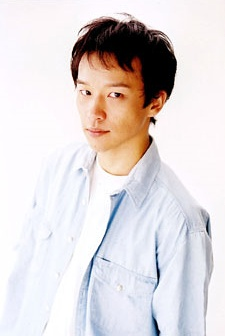

Ryo Naitou is a Japanese actor. He is affiliated with Y.M.O. Management. Naitou voiced Taiga Okajima in Assassination Classroom.
- Gender: Male
- Birthday: June 22, 1974
- Hometown: Osaka, Japan
- Hobbies: Guitar, Mah-Jong, and Watching F1 Racing

|

|
|---|
|  |
Ryo Naitou is a Japanese actor. He is affiliated with Y.M.O. Management. Naitou voiced Taiga Okajima in Assassination Classroom.
|
|---|
 |
Touta Matsuda |
|
Touta Matsuda is the most spoken member on the Kira investigation team. He has a naive personality and manage to stay alive through a few dangerous times. He supportive and sympathetic towards Kira's ideals. |